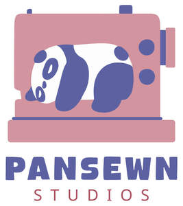

Trade Mark Journal No.2026/010 6 March 2026
UK00004341085 15 February 2026 (14,16,18,21,22,24,25,26,28,40)

- Class 14
- Jewellery; Jewellery brooches; Fashion jewellery; Costume jewellery; Decorative brooches [jewellery]; Earrings; Bracelets made of embroidered textile [jewellery]; Key fobs, not of metal; Key rings; Charms for key rings; Decorative key rings; Jewellery cases; Wristlets [jewellery].
- Class 16
- Bookmarks; Page markers; Gift bags; Gift tags; Book wrappings; Pencil cases; Pen and pencil cases; Roll-up pencil cases; Pen cases; Stationery cases; Protective covers for books; Sandwich bags.
- Class 18
- Key wallets; Key bags; Key pouches; Key cases; Cases for holding keys; Make-up cases; Nightwear cases [overnight cases]; Cases for keys; Animal covers; Covers and wraps for animals; Tote bags; Bags; Carry-all bags; Grocery tote bags; Drawstring bags; Cross-body bags; Crossbody bags; Sling bags; Diaper bags; Toiletry bags; Shoulder bags; Belt bags and hip bags; Clutch bags; Nappy bags; Shoe bags; Belt bags; Cloth bags; Canvas bags; Mesh shopping bags; Toilet bags; Bum bags; Reusable shopping bags; Hand bags; Gym bags; Roll bags; Book bags; Purses; Clutch purses; Handbags, purses and wallets; Coin purses; Pocket wallets; Small clutch purses; Small purses; Wrist mounted purses; Change purses; Clutch handbags; Wallets with card compartments; Toiletry bags sold empty; Pouches for holding make-up, keys and other personal items; Purses, not made of precious metal [handbags]; Make-up bags sold empty; Nappy wallets; Wash bags for carrying toiletries; Coin purses not made of precious metal; Wrist-mounted wallets; Holders in the nature of wallets for keys.
- Class 21
- Potholders; Kitchen mitts; Oven gloves; Dish cloths; Thermal insulated wrap for cans to keep the contents cold or hot; Insulating sleeve holder for beverage cups; Tea cosies; Dish covers; Covers for dishes; Coasters (tableware); Insulated lunch bags; Thermal insulated tote bags for food or beverages; Appliances for removing make-up, non-electric; Oven mitts; Oven heat resistant pads.
- Class 22
- Textile wine gift bags; Fabric gift bags.
- Class 24
- Bunting of textile or plastic; Tablemats of textile; Textile coasters; Textile serviettes; Handcrafted textile wall hangings; Quilts; Quilted blankets [bedding]; Kitchen towels of cloth; Kitchen and table linens; Table cloth of textile; Gift wrap of fabric; Pillow cases; Cushion covers; Pillow covers; Covers for cushions; Table covers [not of paper]; Bean bag covers; Coasters of textile; Cloth coasters; Coasters [table linen]; Drink coasters of table linen; Mats [coasters] of textile; Cloth napkins for removing make-up; Make-up pads of textile for removing make-up; Cloths for removing make-up; Sofa blankets; Lap blankets; Bed quilts; Hooded blankets; Travelling blankets; Covers for pillows; Bed throws; Blankets for household pets; Children's blankets; Picnic blankets; Blanket throws; Baby blankets; Blankets for outdoor use; Baby buntings; Bunting; Bunting flags.
- Class 25
- Fabric belts [clothing]; Quilted vests; Aprons; Aprons [clothing]; Overalls; Cloth bibs; Pinafore dresses; Mitts [clothing]; Knitted gloves; Bibs, sleeved, not of paper; Baby bibs [not of paper]; Cloth bibs for adult diners; Knitted baby shoes; Baby pants; Nappy pants [clothing]; Bootees (woollen baby shoes); Handwarmers [clothing]; Baby clothes; Bow ties; Ties; Ties [clothing]; Neck scarves; Costumes; Halloween costumes; Costumes for use in children's dress up play; Dressing gowns; Clothing; Gloves as clothing; Dresses; Scarves; Headbands [clothing]; Headbands for clothing; Scarfs; Mufflers as neck scarves; Knitwear [clothing]; One-piece playsuits; Romper suits; Playsuits [clothing]; Leggings [trousers]; Jumper dresses; Sundresses; Fancy dress costumes; Socks; Slipper socks; Non-slip socks; Shoulder wraps; Wraps [clothing]; Headwear; Children's headwear; Hats; Gloves; Fingerless gloves; Bandanas; Snoods [scarves]; Sweatbands; Leg-warmers; Legwarmers; Beanie hats; Bobble hats; Woolly hats; Bucket hats; Beanies; Shawls and headscarves; Sweaters.
- Class 26
- Textile ribbons for gift wrapping; Textile bows for gift wrapping; Hair wraps; Hairbands; Scrunchies; Hair barrettes; Hair scrunchies; Bows for the hair; Brooches for clothing; Novelty buttons [badges] for wear; Cloth patches for clothing; Patches for clothing.
- Class 28
- Costume masks; Halloween masks; Costumes being childrens playthings; Christmas stockings; Christmas tree decorations; Christmas tree ornaments; Christmas tree skirts; Teddy bears; Stuffed toy bears; Stuffed toy animals; Stuffed and plush toys; Stuffed plush toys; Plush stuffed toys.
- Class 40
- Quilting; Sewing; Custom quilting; Needlework and dressmaking; Sewing services.
Michelle Smith